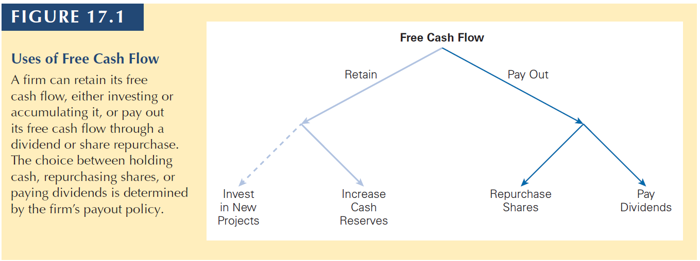
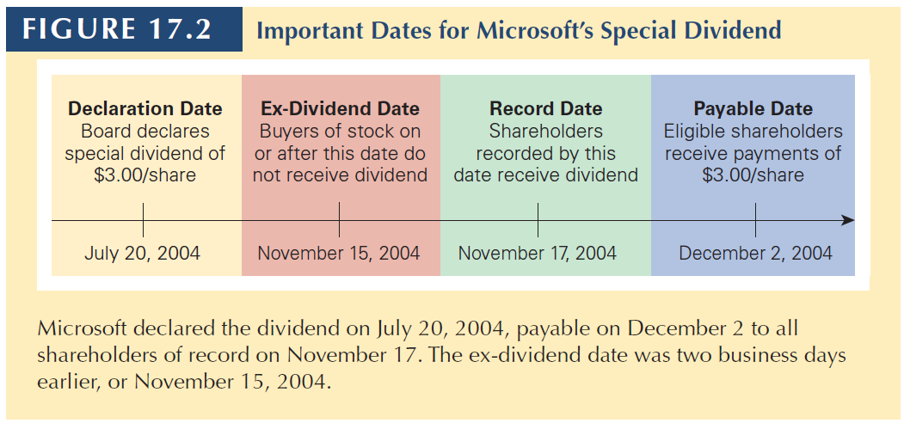

Estratégia Financeira
Part 10 - Ch 17 Payout Policy

22-01-2024
Chapter Outline
17.1 Distributions to Shareholders
17.2 Comparison of Dividends and Share Repurchases
17.3 The Tax Disadvantage of Dividends
17.4 Dividend Capture and Tax Clienteles
17.5 Payout Versus Retention of Cash
17.6 Signaling with Payout Policy
17.7 Stock Dividends, Splits, and Spin-Offs
17.1 Distributions to Shareholders
17.1 Distributions to Shareholders
Payout Policy
The way a firm chooses between alternative ways to distribute FCF to equity holders.

Remember: In Brazil, we also have interest on equity.
Also, in most countries, investors pay taxes over dividends and over capital gains.
17.1 Distributions to Shareholders
About dividends:
Declaration Date
The date on which the board of directors authorizes the payment of a dividend.
Ex-dividend Date
A date, two days prior to a dividend’s record date, on or after which anyone buying the stock will not be eligible for the dividend.
Record Date
When a firm pays a dividend, only shareholders on record on this date receive the dividend.
Payable Date (Distribution Date)
A date, generally within a month after the record date, on which a firm mails dividend checks to its registered stockholders.
17.1 Distributions to Shareholders
17.1 Distributions to Shareholders
Types of dividends
Regular dividends
Usually paid every quarter.
Special Dividend
A one-time dividend payment a firm makes, which is usually much larger than a regular dividend.
Stock Split (Stock Dividend)
When a company issues a dividend in shares of stock rather than cash to its shareholders.
Liquidation dividend
When the dividend is paid while liquidating the firm’s business. Contrary to the others, it is taxed as capital gain.
17.1 Distributions to Shareholders
Share Repurchases
- An alternative way to pay cash to investors is through a share repurchase or buyback.
- The firm uses cash to buy shares of its own outstanding stock.
Open Market Repurchase
- When a firm repurchases shares by buying shares in the open market. Open market share repurchases represent about 95% of all repurchase transactions.
17.1 Distributions to Shareholders
Tender Offer
- A public announcement of an offer to all existing security holders to buy back a specified amount of outstanding securities at a prespecified price (typically set at a 10% to 20% premium to the current market price) over a prespecified period of time.
- If shareholders do not tender enough shares, the firm may cancel the offer, and no buyback occurs.
Dutch Auction
- A share repurchase method in which the firm lists different prices at which it is prepared to buy shares, and shareholders in turn indicate how many shares they are willing to sell at each price.
- The firm then pays the lowest price at which it can buy back its desired number of shares. (Link)
17.1 Distributions to Shareholders
Targeted Repurchase
- When a firm purchases shares directly from a specific shareholder
Greenmail
- When a firm avoids a threat of takeover and removal of its management by a major shareholder by buying out the shareholder, often at a large premium over the current market price
17.2 Dividends vs. Share Repurchases
17.2 Dividends vs. Share Repurchases
Consider Genron Corporation. The firm’s board is meeting to decide how to pay out 20 million in excess cash to shareholders.
Genron has no debt, its equity cost of capital equals its unlevered cost of capital of 12%.
10 million shares outstanding; future free cash flows of 48 million per year.
Assume perfect Capital Markets.
17.2 Dividends vs. Share Repurchases
Alternative Policy 1: Pay Dividend with Excess Cash
With 10 million shares outstanding, Genron will be able to pay a 2 dividend now.
The firm expects to generate future free cash flows of 48 million per year; thus, it anticipates paying a dividend of 4.80 per share each year thereafter.
So, we can calculate that equity holders will receive (assuming the company is paying 2 as dividend today). This is the share price.
\[2 + PV(4.80 \;per\;year) = 2 + \frac{4.80}{0.12} = 2 + 40 = 42 \] After the 2-dividend payment, we can write
\[PV(4.80 \;per\;year) = \frac{4.80}{0.12} = 40 \]
17.2 Dividends vs. Share Repurchases
Notice that after the dividend payment, the share price drops by 2 (the dividend per share value).
In a perfect capital market, when a dividend is paid, the share price drops by the amount of the dividend when the stock begins to trade ex-dividend.
17.2 Dividends vs. Share Repurchases
Alternative Policy 2: Share Repurchase (No Dividend)
Suppose that instead of paying a dividend this year, Genron uses the 20 million to repurchase its shares on the open market
The company can buy 476,000 shares: \(\frac{20\;million}{42\;per\;share} = 0.476 \; million \; shares\)
New outstanding shares: \(10 - 0.476 = 9.524 \;million\)
After the repurchase, the future dividend value is: \(\frac{48\;million}{9.524\;million\;shares} = 5.04\)
Stock price: \(\frac{5.04}{0.12}=42\)
17.2 Dividends vs. Share Repurchases
In perfect capital markets, an open market share repurchase has no effect on the stock price, and the stock price is the same as the cum-dividend price if a dividend were paid instead.
Cum-dividend: When a stock trades before the ex-dividend date, entitling anyone who buys the stock to the dividend ($42 in this example).
Investor Preferences
In perfect capital markets, investors are indifferent between the firm distributing funds via dividends or share repurchases.
Additionally, investors can make a homemade dividend
- In the case of Genron, if the firm repurchases shares and the investor wants cash, the investor can raise cash by selling shares.
- If the firm pays a dividend and the investor would prefer stock, they can use the dividend to purchase additional shares.
17.2 Dividends vs. Share Repurchases
Alternative Policy 3: High Dividend (Equity Issue)
- Suppose Genron wants to pay dividend larger than 2 per share right now, but it only has 20 million in cash today
- Thus, Genron needs an additional $28 million to pay the larger dividend now. To do this, the firm decides to raise the cash by selling new shares.
- Given a current share price of 42, Genron could raise 28 million by selling 0.67 million shares: \(\frac{28\;million}{42\;per\;share}= 0.67\;million\)
- The new dividend per share is: \(\frac{48\;million}{10.67\;million}=4.50\)
- The cum-dividend share price is: \(4.50 + \frac{4.50}{0.12}= 4.50 + 37.50 = 42\)
Again, stock price does not change.
17.2 MM and Dividend Policy Irrelevance
There is a tradeoff between current and future dividends.
If Genron pays a higher current dividend, future dividends will be lower.
If Genron pays a lower current dividend, future dividends will be higher.
In perfect capital markets, holding fixed the investment policy, the firm’s choice of dividend policy is irrelevant and does not affect the initial share price.
17.2 MM and Dividend Policy Irrelevance
Furthermore, shareholders can create a homemade dividend by buying or selling shares themselves.
What is the main input of the dividend policy?
A firm’s free cash flow determines the level of payouts that it can make to its investors.
- In a perfect capital market, the type of payout is irrelevant.
- In reality, capital markets are not perfect, and it is these imperfections that should determine the firm’s payout policy.
While dividends do determine share prices, a firm’s choice of dividend policy does not.
17.3 The Tax Disadvantage of Dividends
17.3 The Tax Disadvantage of Dividends
Taxes on Dividends and Capital Gains
- Shareholders must pay taxes on the dividends they receive, and they must also pay capital gains taxes when they sell their shares.
- Dividends are typically taxed at a higher rate than capital gains. In fact, long-term investors can defer the capital gains tax forever by not selling.
- The higher tax rate on dividends makes it undesirable for a firm to raise funds to pay a dividend.
- When dividends are taxed at a higher rate than capital gains, if a firm raises money by issuing shares and then gives that money back to shareholders as a dividend, shareholders are hurt because they will receive less than their initial investment.
17.3 The Tax Disadvantage of Dividends
Problem. Assume that:
- A firm raises 25 million from shareholders and uses it to pay 25 million in dividends.
- Dividends are taxed at a 39% tax rate. Capital gains are taxed at a 20% tax rate.
- How much will shareholders receive after taxes?
Solution
- On dividends, shareholders will owe \(39\% \times 25 = 9.75 million\) in taxes.
- Because the firm value falls after dividend, the capital gain will be 25 million less when investors sell, lowering the capital gains taxes by \(20\% \times 25 = 5 million\).
- Shareholders will pay a total of \(9.75 − 5.00 = 4.75 million\) in taxes.
- Shareholders will receive back only \(25 − 4.75 = 20.25 million\).
17.3 The Tax Disadvantage of Dividends
Optimal Dividend Policy with Taxes
- When the tax rate on dividends is greater than the tax rate on capital gains, shareholders will pay lower taxes if a firm uses share repurchases rather than dividends.
- This tax savings will increase the value of a firm that uses share repurchases rather than dividends.
- The optimal dividend policy when the dividend tax rate exceeds the capital gain tax rate is to pay no dividends at all.
Dividend Puzzle
- When firms continue to issue dividends despite their tax disadvantage, when it exists.
17.4 Dividend Capture and Tax Clienteles
17.4 Dividend Capture and Tax Clienteles
The preference for share repurchases rather than dividends depends on the difference between the dividend tax rate and the capital gains tax rate.
The Effective Dividend Tax Rate: Consider buying a stock just before it goes ex-dividend and selling the stock just after. The equilibrium condition is:
\[(P_{cum}-P_{ex})\times(1-\tau_g) = Div(1-\tau_d)\]
which changes to:
\[P_{cum}-P_{ex} = Div\times\frac{1-\tau_d}{1-\tau_g} = Div \times [ 1 - \frac{\tau_d - \tau_g}{1-\tau_g} ] = Div \times (1-\tau^*_d)\]
\[\tau^*_d = \frac{\tau_d - \tau_g}{1-\tau_g} \]
This measures the additional tax paid by the investor per dollar of after-tax capital gains income that is received as a dividend.
17.4 Dividend Capture and Tax Clienteles
The effective dividend tax rate differs across investors for a variety of reasons.
- Income Level, Investment Horizon, Tax Jurisdiction, Type of Investor or Type of investment Account, etc.
As a result of their different tax rates, investors will have varying preferences regarding dividends.
Therefore, we have an effect called: Clientele effect.
When the dividend policy of a firm reflects the tax preference of its investor clientele.
- Individuals in the highest tax brackets have a preference for stocks that pay no or low dividends, whereas tax-free investors and corporations have a preference for stocks with high dividends.
17.4 Dividend Capture and Tax Clienteles
Dividend-Capture Theory
The theory that absent transaction costs, investors can trade shares at the time of the dividend so that non-taxed investors receive the dividend.
An implication of this theory is that we should see large trading volume in a stock around the ex-dividend day, as high-tax investors sell and low-tax investors buy the stock in anticipation of the dividend, and then reverse those trades just after the ex-dividend date.
The empirical evidence partially supports this theory. Many high-tax investors keep the stocks anyway.
- We do not have such evidence in Brazil.
17.5 Payout Versus Retention of Cash
17.5 Payout Versus Retention of Cash
In perfect capital markets, once a firm has taken all positive-NPV projects, it is indifferent between saving excess cash and paying it out.
When such market imperfections do exist, there is a tradeoff:
Retaining cash can reduce the costs of raising capital in the future, but it can also increase taxes and agency costs.
Let’s discuss now the decision of holding cash instead of paying dividends or repurchasing shares.
17.5 Payout Versus Retention of Cash
Retaining Cash with Perfect Capital Markets
- If a firm has already taken all positive-NPV projects, any additional projects it takes on are zero or negative-NPV projects.
- Rather than waste excess cash on negative-NPV projects, a firm can use the cash to purchase financial assets.
- In perfect capital markets, buying and selling securities is a zero-NPV transaction, so it should not affect firm value.
Thus, with perfect capital markets, the retention versus payout decision is irrelevant.
MM Payout Irrelevance
In perfect capital markets, if a firm invests excess cash flows in financial securities, the firm’s choice of payout versus retention is irrelevant and does not affect the initial share price.
17.5 Payout Versus Retention of Cash
Problem
Payne Enterprises has 20,000 in excess cash. Payne is considering investing the cash in one-year Treasury bill paying 5% interest and then using the cash to pay a dividend next year. Alternatively, the firm can pay a dividend immediately, and shareholders can invest the cash on their own. In a perfect capital market, which option will shareholders prefer?
Solution
- If Payne pays an immediate dividend, the shareholders receive 20,000 today.
- If Payne retains the cash, at the end of one year the company will be able to pay a dividend of 21,000 (20,000 × (1.05) = 21,000)
- If shareholders invest the 20,000 in Treasury bills themselves, they would have $21,000 at the end of one year (20,000 × (1.05) = 21,000)
- The present value in either scenario is 20,000
17.5 Payout Versus Retention of Cash
Adjusting for Investor Taxes
- The decision to pay out versus retain cash may also affect the taxes paid by shareholders.
- When a firm retains cash, it must pay corporate tax on the interest it earns. In addition, the investor will owe capital gains tax on the increased firm value. The interest on retained cash is taxed twice.
- If the firm paid the cash to its shareholders instead, they could invest it and be taxed only once on the interest that they earn.
- The cost of retaining cash thus depends on the combined effect of the corporate and capital gains taxes, compared to the tax on interest income.
\[\tau^*_{retain} = 1-\frac{(1-\tau_c)(1-\tau_g)}{(1-\tau_i)}\]
17.5 Payout Versus Retention of Cash
Issuance and Distress Costs
A reason to hold cash:
- Generally, firms retain cash balances to cover potential future cash shortfalls, despite the tax disadvantage to retaining cash.
- A firm might accumulate a large cash balance if there is a reasonable chance that future earnings will be insufficient to fund future positive-NPV investment opportunities.
- The cost of holding cash to cover future potential cash needs should be compared to the reduction in transaction, agency, and adverse selection costs of raising new capital through new debt or equity issues.
17.5 Payout Versus Retention of Cash
Agency Costs of Retaining Cash
However…
- When firms have excessive cash, managers may use the funds inefficiently by paying excessive executive perks, over-paying for acquisitions, etc.
- Paying out excess cash through dividends or share repurchases, rather than retaining cash, can boost the stock price by reducing managers’ ability and temptation to waste resources.
At the end of the day:
- Firms should choose to retain to help with future growth opportunities and to avoid financial distress costs.
- Firms trade off these benefits against agency costs.
17.6 Signaling with Payout Policy
17.6 Signaling with Payout Policy
Dividend Smoothing
- The practice of maintaining relatively constant dividends
- Firm change dividends infrequently, and dividends are much less volatile than earnings.
17.6 Signaling with Payout Policy
Dividend Signaling Hypothesis
The idea that dividend changes reflect managers’ views about a future earnings.
If firms smooth dividends, the firm’s dividend choice will contain information regarding management’s expectations of future earnings.
When a firm increases dividend, it sends a positive signal to investors that they expect to be able to afford the higher dividend for the foreseeable future.
When a firm decreases dividend, it may signal that they have given up hope that earnings will rebound in the near term and so need to save cash.
But there is a catch
- Although an increase of a firm’s dividend may signal optimism regarding its future FCF, it might also signal a lack of investment opportunities.
- In this case, the dividend decrease might lead to a positive stock price reaction.
17.6 Signaling with Payout Policy
Signaling and Share Repurchases
- Share repurchases are a credible signal that the shares are underpriced, because if they are overpriced a share repurchase is costly for current shareholders.
- If investors believe that managers have better information regarding the firm’s prospects and act on behalf of current shareholders, then investors will react favorably to share repurchase announcements.
- But, announcing a share repurchase today does not necessarily represent a long-term commitment to repurchase shares. Dividends is a stronger signal in this regard.
- Also, a firm may announce a share repurchase program but not repurchase any shares. It is not mandatory to buy back shares. But once the firm announces dividends payment, it has to pay.
17.7 Stock Dividends, Splits, Spin-Offs
17.7 Stock Dividends, Splits, Spin-Offs
Stock Dividends
- With a stock dividend, a firm does not pay out any cash to shareholders. As a result, the total market value of the firm’s equity is unchanged.
- The only thing that is different is the number of shares outstanding. The stock price will therefore fall because the same total equity value is now divided over a larger number of shares.
- Suppose Genron paid a 50% stock dividend rather than a cash dividend.
- A shareholder who owns 100 shares (price = $42) before the dividend has a portfolio worth 4,200. After the dividend, the shareholder owns 150 shares.
- Because the portfolio is still worth 4,200, the stock price will fall to 28 (\(\frac{4,200}{150}\)).
Sometimes, firms finance new shares. So, it is like shareholders have received cash and immediately bought new shares. In this case, decline in price is not as large as above.
17.7 Stock Dividends, Splits, Spin-Offs
Splits
- The typical motivation for a stock split is to keep the share price in a range thought to be attractive to small investors.
- If the share price rises “too high,” it might be difficult for small investors to invest in the stock.
- Keeping the price “low” may make the stock more attractive to small investors and can increase the demand for and the liquidity of the stock, which may in turn boost the stock price.
- On average, announcements of stock splits are associated with a small positive increase in the stock price.
Reverse Split (inplit)
- When the price of a company’s stock falls too low and the company reduces the number of outstanding shares. 2 shares become 1 of twice the previous price.
17.7 Stock Dividends, Splits, Spin-Offs
Spin-Off
- When a firm sells a subsidiary by selling shares in the subsidiary alone. That is, the parent turns a subsidiary into a separate company.
- For instance, Itau-XP Spin-off:
- Itau could have sold XP and paid cash as dividends.
- Instead, Itau’s current shareholders received x stocks of XP per share they hold of Itau.
- Spin-Offs offer two advantages.
- It avoids the transaction costs associated with the actual sale.
- The special dividend is not taxed as a cash distribution. Investors will only pay capital gains taxes when they sell the received stocks.
Problems
Question 1
Question 2
THANK YOU!
QUESTIONS?

Henrique C. Martins

[Henrique C. Martins] [henrique.martins@fgv.br] [Teaching Resources] [Comments]
Comments?